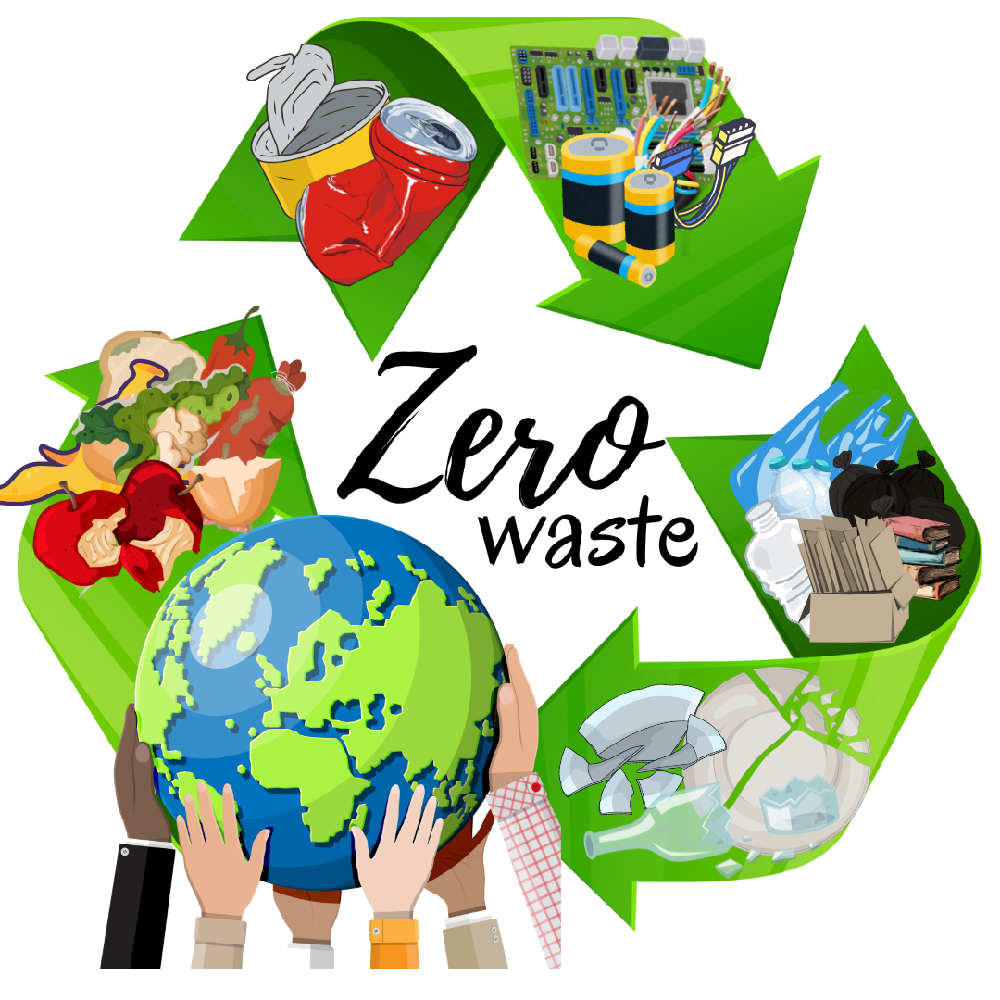

Bank sampah adalah sebuah sistem pengelolaan sampah berbasis komunitas yang bertujuan untuk mengurangi volume sampah yang berakhir di tempat pembuangan akhir (TPA) sekaligus memberikan manfaat ekonomi.
Bank sampah adalah sebuah sistem pengelolaan sampah berbasis komunitas yang bertujuan untuk mengurangi volume sampah yang berakhir di tempat pembuangan akhir (TPA) sekaligus memberikan manfaat ekonomi. Dalam konsep ini, warga sekola dapat menyetor sampah anorganik, seperti plastik, kertas, kaleng, logam, atau kaca, ke bank sampah untuk ditimbang dan dicatat sebagai tabungan. Sampah tersebut kemudian diolah, didaur ulang, atau dijual kepada pihak yang membutuhkan.
Jika Anda mempunyai pertanyaan tentang kami Anda dapa meninggalkan pesan di bawah sini
© 2024 Bank Sampah SMKN 8 Malang. Semua Hak Dilindungi.